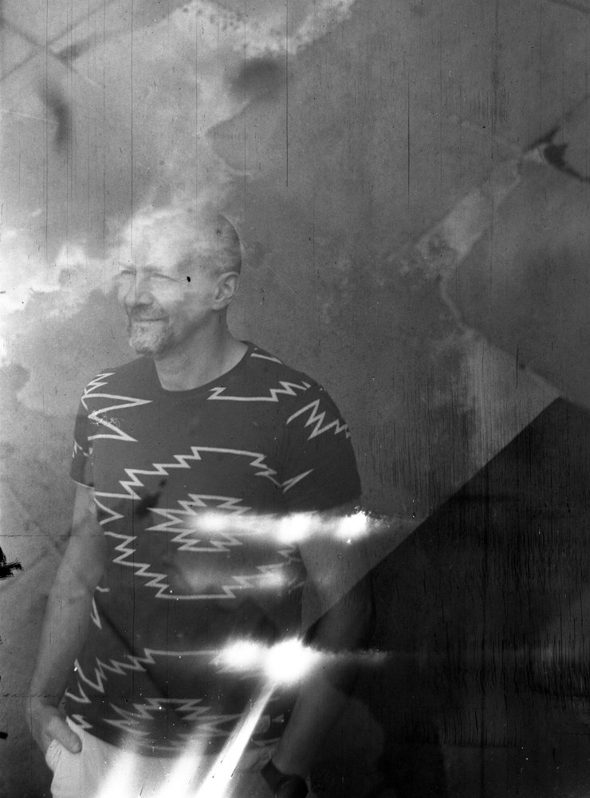

The photographer
About
I work mostly with medium format film and shoot primarily on a Rolleiflex 1950 — a camera that demands patience and rewards attention.
My day job involves working with light — tracing it through the atmosphere, measuring what it carries. Photography is the same question asked differently: what does light reveal, and what does it conceal?
My work gravitates toward architecture, urban atmosphere, and quiet human presence — the geometry of cities at night, figures caught in passing, distances that are not quite crossed. The long exposure, the grain of film, the old glass — these are both the obstacles and the instruments.
Based in Paris. Occasional traveller.
